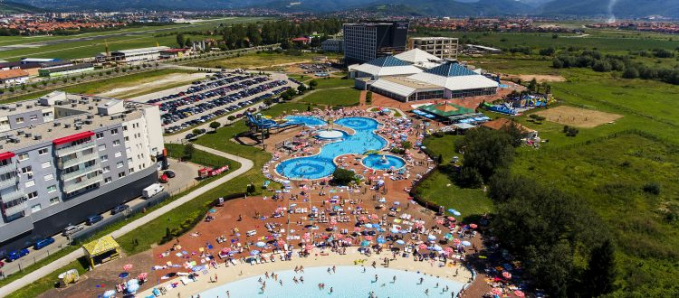

Hotel Hills, Thermal & Spa Resort Sarajevo
Hotel Hills, Thermal & Spa Resort Sarajevo is a new five star Hotel thathas attractive location in the center of the green oasis of Sarajevo and within 2 km from the International Airport Sarajevo.

Hotel Hills, Thermal & Spa Resort Sarajevo is a part of a Mrkulic group,
the biggest hospitality group in Bosnia and Herzegovina, owner of the
Hollywood hotel Sarajevo 4*, Termalna Riviera and Hollywood travel as
well. Hotel Hills, Thermal & Spa Resort Sarajevo includes 335
sophisticated comfort and luxurious rooms and suites, all with spacious
balconies, chosen details, multi-purpose Congress center with modern
conference technology, Thermal spa’s, indoor and outdoor swimming
pools, Adrenalin park for children and adults on impressive 2200 square
meters, Wedding halls, couple of restaurants with international and national
cuisine. The most attractive restaurant and lounge bar is placed at
the top of the Hotel with beautiful panoramic view to the green
surroundings of the Hotel.
Premium accommodation and conference venue, a professional service
with a hint of personality and a wide range of facilities are what Hotel
Hills, Thermal & Spa Resort Sarajevo is to guarantee.
Thermal Riviera
Thermal Riviera Ilidža is placed in the very heart of Ilidza, green oasis of Sarajevo with hot springs, near international airport of Sarajevo. Thermal Riviara Ilidža presents the largest thermal pool complex in this part of Europe. It offers its visitors a pleasant relaxation and active recreation in indoor and outdoor pools with numerous attractive animation programs. Two luxury hotels, hotel Hollywood and hotel Hills, offer accommodations at the highest European standard to its guests.
Summer Riviera outdoor pools consist of 4,600 m2 of water surface, and offers, as well as indoor pools, fast flowing river, massage seats, jet massage, whirlpools, water slides, trampoline, ping pong and children’s toy cars. The biggest attraction of the outdoor pools is the wave pool giving an impression of real ocean waves, and it is the largest pool of such type in the region. There is a coffee-restaurant at the outdoor pool where guests can enjoy refreshing drinks. The Thermal Riviera Ilidža and its indoor swimming pool, operates 365 days a year, while outdoor swimming pools works during the summer season only.
Restaurant
Hotel Hills 5* has a restaurant which have capacity for 1500 guest
for breakfast, dinner and lunch, serving international and national
cuisine. This restaurant is a great place for organising weddings,
congress meetings and a lot of different ocasions. At the top of
Hotel Hills5* is placed one of the most attractive restaurants with beautiful
panoramic view to the green surrounding of the Hotel.
Wedding Salon Hotel Hills
Immaculate, romantic and unforgettable, the wedding salon Hills, your wedding is everything you want and what you have dreamed.
Wedding, party and events
If you are looking for an unforgettable wedding, place for a special celebration, or unique atmosphere for some other event, then you can stop looking, you’ve come to the right placeWith a maximum capacity of over 800 seats bridal salon Hills is able to organize any type of celebration.
The place where are formed memories
Our professional and experienced team will take care to make every your event lapse smoothly and that your experience in the wedding salon Hills unforgettable. Organization team wedding salon Hills has many years of experience with weddings and celebrations, so we understand how important it is that your special occasion lapse perfectly.
Your wedding is an occasion that you have decided to share with a select group of people and we would be happy to be involved in creating a memorable day for you and your friends and relatives.